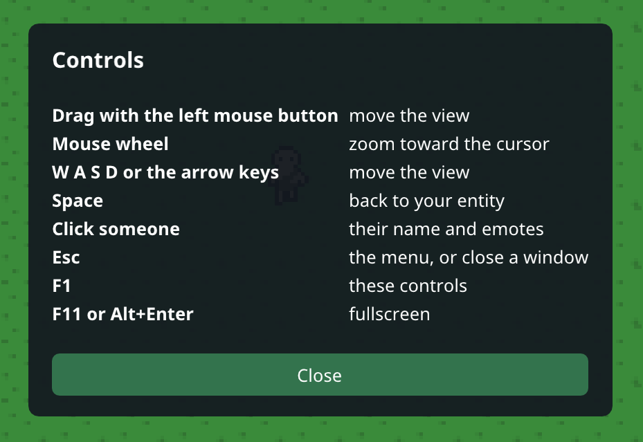

0.3 · 2026-10-24
Project Utopia on PC
Development Version 3
Project Utopia now runs on PC! Log in with the same account you use on your phone, and you're in the same world as
everyone playing on Android.
Get it on Windows
- Playtesters get the Windows zip directly. Unzip it anywhere and run ProjectUtopia.exe.
- Windows may say "Windows protected your PC". Choose More info, then Run anyway. The game isn't signed yet, so
Windows doesn't know who made it.
- It needs Windows 10 or 11 (64-bit).
Playing on PC
- Log in with the same email and password as on your phone, or sign up right on the PC.
- Everything the phone does works on PC: foraging, choosing your home, the Welcome trait, naming a new character and
the patch notes.
- The PC keeps you logged in, and remembers your window size and fullscreen.
Controls
- Drag with the left mouse button to move the view
- The mouse wheel zooms toward the cursor
- W A S D or the arrow keys move the view, and Space brings it back to your character
- Click another character to see their name and give them the Welcome Trait
- Esc opens the menu, F1 shows the controls, and F11 goes fullscreen
One account, one world
- PC players and phone players are in the same world, so you can meet each other.
- You play on one device at a time. Logging in on a second device shows Playing on another device on the first
one, with a Play here button to switch back.
Behind the scenes
- The phone and the PC now run the same game code, so every update from here on comes to both at the same time.
- If the server can't be reached, the game gives up after 10 seconds and tries again, instead of hanging.
Good to know
- Everyone needs the new version: the phone app updates to 0.3 too.
- Starvation alerts still come to your phone. Email alerts for players who only play on PC are planned for the next
update.
THANK YOU FOR PLAYING
Please send an email if you have any questions about the game, or you want access to it while it's in development!
jared.allen.games@gmail.com
